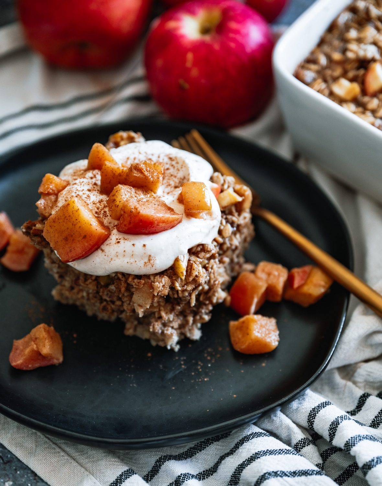

Apple Cinnamon Baked Oatmeal

Breakfast All Week!
If you're trying to nail down a filling breakfast you can make ahead of time and eat all week, look no further than this delectable morsel. The apple cinnamon baked square has got your back!
With just a few short ingredients, you'll be well on your way to an easy, preppable breakfast that you'll be raving about for it's ease and bursts of flavor.
Everyone knows it's hard to beat the combination of cinnamon and apple together. But did you know you can make it into a chewy square bar? Yup! You sure can!
Ingredients
- 2 cups rolled old fashioned oats
- 1 tsp cinnamon
- 1 tsp baking powder
- 1/2 tsp sea salt
- 2 cups non-dairy milk
- 1/2 cup unsweetened applesauce
- 1/4 cup maple syrup
- 1 tbs ground flax
- 1 tbs coconut oil
- 1 tsp vanilla extract
- 1 cup diced apples, divided
- 1/3 cup raisins
The Steps
- Add oats, cinnamon, baking powder, sea salt, alternative milk, applesauce, maple syrup, flax, coconut oil, and vanilla extract into a bowl.
- Fold in half cup raisins and half cup of the apples.
- Add to pre-coated 8x8 baking dish.
- Garnish with remaining half cup of apples.
- Bake at 375° about 40 minutes.
- Serve with a drizzles of maple syrup, almond butter, or honey.